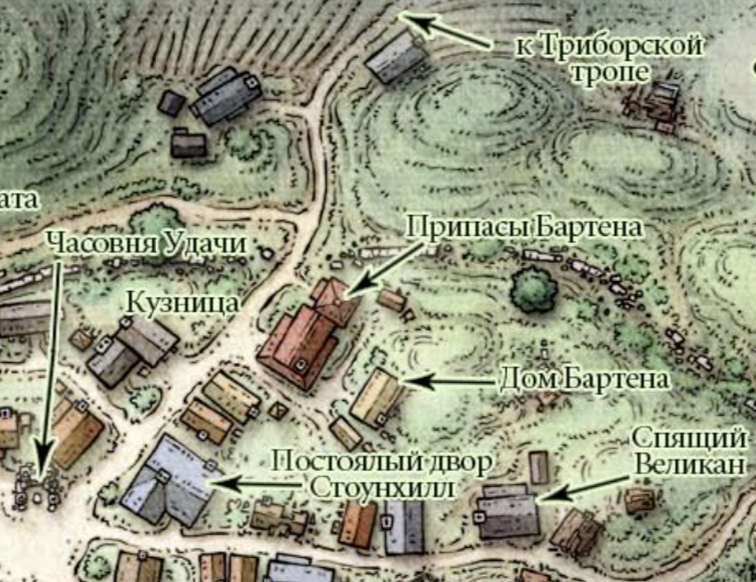
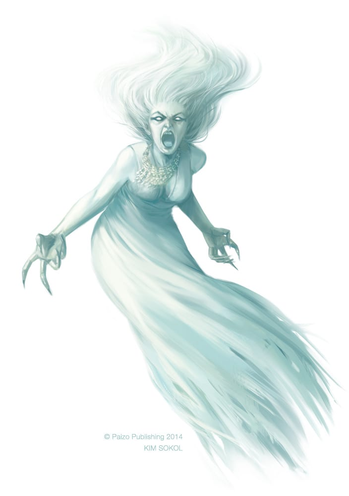
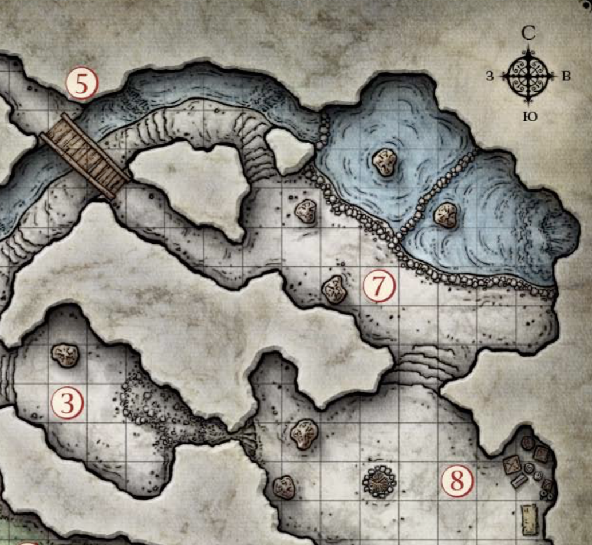

Сесія 2
Загін шукачів пригод:
- Оля (Лорей Мітенваль, напівельф-бард (1))
- Діма (Боба Фетт, людина-боєць (1))
- Лана (Зенбіріт Текенурдаас, драконороджена-паладинка (1))
- Роман (Дормаріс, ельф-друїд (1))
- Іван (Дюрам, напіворк-варвар (1))
Пригоди:
 В пошуках могутнього лиходія Неззнара Чорного Павука герої натрапили на його слід у містечку Фандалін, що на південь від Невервінтера. Прибувши на місце, персонажі знайшли жваве шахтарське поселення, збудоване на руїнах старого кам’яного міста. Загін відвідав місцеву таверну, каплицю богині удачі Тімори, кузню та Припаси Бартена. Ніхто про Неззнара тут не чув, та герої вірять, що рано чи пізно кривавий слід злочинця виявиться десь поблизу.
Натомість, місцеві розповіли про біди, яких їм завдає місцева ж банда головорізів Червоних Плащів. Люди залякані і не мають потуги, щоб припинити злодіяння шайки, а мер містечка відверто не робить жодних кроків в напрямку справедливості. Та всі зійшлись на одному - трактир Сплячий Велетень - улюблене місце Червоних Плащів.
 Сестра Гараель, жриця богині Тімори, також попросила загін навідати хижину банші в трьох днях ходу на схід по Тріборському тракту. Банша Агата, що живе там, повинна відповісти на одне запитання героїв, а саме - де знаходиться легендарна книга заклять мага Боуджентла. Примара відмовилась відповідати сестрі Гараель і ледь не звела її зі світу, та сестра не здалась і вручила героям дорогоцінний срібний гребінь з коштовним камінням, який має припасти до душі банші.
Ельмар Бартен з Припасів Бартена сильно стривожений за свого друга, дворфа Гандрена Роксікера, який мав прибути з реманентом до його лавки ще три дні тому. Також вже декаду нічого не чути від братів Гандрена - Нандро і Тардена, які мають з’явитися з дня на день. За віднайдення Гандрена Роксікера і його доправлення в Фандалін Ельмар готовий заплатити 20 (!) золотих кожному з героїв.
 Недовго думаючи, загін відправився на Тріборський тракт в пошуках зниклого дворфа. Знайшовши сліди крові і боротьби на тракті, герої попрямували по слідах в ліс на північ. З допомогою дивних вовків безпечно добралися до печери з джерелом і рештою випливаючих ефектів. Через пролом-димар герої видерлись прямо в залу ватажка місцевих гоблінів, ведмежатника Кларга. Вдале закляття Лорей поклало звіра на лопатки корчитись від сміху, доки Дормаріс магічним посохом розкидав гоблінів. Серія неточних ударів - і ведмежатник разом зі свитою простяглись мертвою вагою на долівці. Більшість мішків і ящиків, награбованих гоблінами, позначено зображенням синього лева - символом Левових Щитів, торгової організації, що має лавку в Фандаліні. Залишилось знайти хороший віз - і добро можна повернути власнику. Серед скарбів Кларга знайшлось багато срібла, два лікувальних зілля і статуетка жаби з золотими очима.
Недовго думаючи, загін відправився на Тріборський тракт в пошуках зниклого дворфа. Знайшовши сліди крові і боротьби на тракті, герої попрямували по слідах в ліс на північ. З допомогою дивних вовків безпечно добралися до печери з джерелом і рештою випливаючих ефектів. Через пролом-димар герої видерлись прямо в залу ватажка місцевих гоблінів, ведмежатника Кларга. Вдале закляття Лорей поклало звіра на лопатки корчитись від сміху, доки Дормаріс магічним посохом розкидав гоблінів. Серія неточних ударів - і ведмежатник разом зі свитою простяглись мертвою вагою на долівці. Більшість мішків і ящиків, награбованих гоблінами, позначено зображенням синього лева - символом Левових Щитів, торгової організації, що має лавку в Фандаліні. Залишилось знайти хороший віз - і добро можна повернути власнику. Серед скарбів Кларга знайшлось багато срібла, два лікувальних зілля і статуетка жаби з золотими очима.
 Природні сходи вивели до великої зали з водоспадом та двома штучними водосховищами, від яких і брало початок джерело. Гоблінська стріла прошила Зенбіріт, та злагодженими діями бійців рану вдалось усунути, так само як і всіх тутешніх гоблінів. Тунель вивів героїв на місток над джерелом, де гоблін-вартовий виглядав незваних гостей від входу до печери. Чи знайде хтось його труп - залишається загадкою.
Підсумки:
- Оля (Лорей Мітенваль, напівельф-бард (1)): 100/300ХР
- Діма (Боба Фетт, людина-боєць (1)): 200/300ХР
- Лана (Зенбіріт Текенурдаас, драконороджена-паладинка (1)): 100+200=300/300ХР => 2 рівень
- Роман (Дормаріс, ельф-друїд (1)): 200/300ХР
- Іван (Дюрам, напіворк-варвар (1)): 30+200=230/300ХР
Надбання:
- 22 срібних і 123 мідяки кожному
- 2 лікувальних зілля (2d4+2HP кожне)
- Дорогоцінна статуетка жаби
- Срібний гребінь з камінням